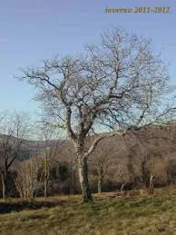

A due passi dal mio lab c'è questo vecchio noce; d'estate è immerso in un tripudio di verde che lo mimetizza nel suo e nell'altrui colore.
L'inverno è invece la sua stagione: ecco come si pavoneggia, re nella natura dormiente.
Sono tempi adatti alla meditazione, magari sulle future sintesi che attendono la calda stagione.
2 commenti